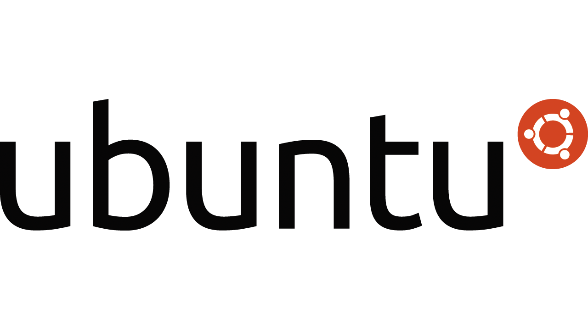

- Skills -

Cloud Computing - DevOps
Soy un entusiasta de las tecnologias Cloud. Tengo experiencia en nubes publicas como Google y Amazon. Empeze a especializarme en Google Cloud como plataformar de trabajo principal. Pero facilmente puedo adaptarme a otras plataformas. Docker | Kubernetes | Terraform | Jenkins
Lenguajes de Programacion
Llevo un año programando en C y C++. Son los primeros lenguajes que aprendi. A partir de aqui aprendi ensamblador, python , html, css y constantemente me encuentro aprendiendo nuevos lenguajes.

Administracion de Sistemas
Utilizo en mi dia a dia Linux. Llevo trabajando con el 2 años. Tengo conocimiento en programacion shell. Ademas de comandos para moverme por el sistema y poder administrar usuarios, servidores y base de datos.